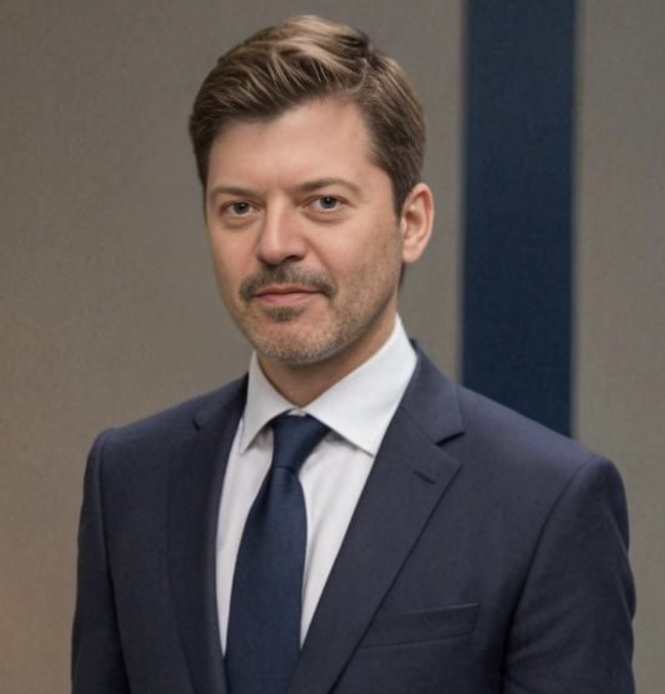

I own the technical direction — multi-agent architectures, private LLMs, knowledge graphs, RAG — with the depth to be accountable for what ships. Today: directing and building agentic systems at the frontier.
€15M+ programmes, €20M+ secured as PI, multidisciplinary teams to 60. Proven by science: Full Professor (Catedrático), h-index 39, 200+ peer-reviewed papers.
A rare technical leader who directs and builds: I own the architecture of agentic and LLM systems in regulated production — and stay deep enough in the engineering to be accountable for whether they ship. And I have led the €15M programmes, multidisciplinary teams and grant-winning science that scale them. Sharpest exactly where agentic AI gets hard: agent governance, responsible AI and reliable deployment.

I own the technical direction of agentic and LLM systems and build them — multi-agent orchestration, private LLM deployment, and the grounding, observability and governance that make them dependable in regulated production. Directing and engineering at once is rare, and it is precisely where agentic AI succeeds or fails.
Design and production-grade Python to deploy and orchestrate agents at enterprise scale — currently accelerating SAP migrations with agentic AI. Scalable, robust, and built to be governed.
Private, on-prem and efficient LLM deployment where data can't leave the building — fine-tuning, quantization and model compression for cost-efficient inference at scale.
Ontologies and knowledge graphs as the backbone of agent grounding and reasoning; advanced RAG, memory and retrieval so agents act on truth, not hallucination.
Output-quality metrics and evals for agents, plus token-saving strategies — per-task model routing, private/small models where they fit, prompt optimization — to keep quality up and spend down.
Twenty years taking AI from strategy to production in highly regulated, high-stakes environments — banking, insurance, healthcare, industrial — where governance and production-grade delivery are non-negotiable.
Insurance · Banking · Healthcare · Industrial · Public sector. Wherever getting AI right is non-negotiable and audit-ready delivery matters.
Technical lead for agentic AI on an SAP migration-acceleration programme. Deliberately hands-on: agent architectures, ontologies/knowledge graphs, observability and inference-cost optimization at scale.
2026 –Owned end-to-end AI strategy and product. Built private enterprise LLMs and distributed training for NLP; senior GenAI advisor to a global insurer (MAPFRE Global Corporate).
2025 – 2026Directed a €15M NextGenEU programme (federated learning, XAI, deep learning) with teams to 60 in a regulated healthcare setting. Technical Authorities Board member.
2019 – 2025Led AI/ML in a top-tier regulated bank: explainable, audit-ready, bias-mitigated risk-scoring and portfolio models. Secure multiparty computation, data-poisoning detection.
2018 – 2020Directed the technical committee of a multi-stakeholder intelligent resource-management programme — real-time prediction, optimization, multi-source data — owning roadmap and governance.
2014 – 2017Led the technical side of winning enterprise RFPs — SEAT-CUPRA (awarded) and MASORANGE — shaping the value case and solution architecture that secured the business.
SEAT-CUPRA · awardedA selection from €20M+ in funded R&D and enterprise programmes led as principal investigator or technical director — from agentic systems to federated healthcare AI.
Agentic AI programme to accelerate enterprise SAP migrations. I own the ontology and knowledge-graph design that grounds the system, and the agentic architecture built around it — the reasoning and orchestration layer that lets agents act reliably on that structured knowledge in production.
As principal investigator, I led the architecture and delivery of a federated, explainable AI platform enabling early diagnosis of age-related diseases across distributed hospital networks — without centralising patient data. Cross-European consortium, inception to production, regulated setting.
I lead the technical and research work on digital-twin AI for early cardiovascular risk from scarce clinical data — demonstrating that explainability and predictive performance coexist even in data-constrained clinical environments. Algorithm design and research leadership.
I led the feasibility, algorithm design and experimental work for a machine-learning-based virtual photogrammetry system to automate wing-fit on the Airbus A400M military transport — 3D computer vision applied to a high-precision aerospace manufacturing problem.
I designed and deployed XAI risk-scoring and portfolio-optimization systems for audit-ready financial decisions — meeting regulatory transparency requirements within a single unified architecture, using secure multiparty computation.
Based in Madrid · open to remote (EU / US time zones). Selective engagements.
I partner with organisations that need to take agentic AI and LLM systems from prototype to reliable, governed production — especially under EU AI Act and regulatory constraints. That can be a hands-on technical lead role, a Head/VP of AI mandate, senior advisory, or a funded research collaboration. If you're scaling AI where getting it right matters, let's talk.